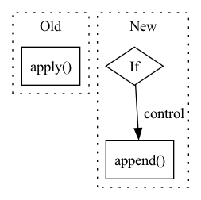

Pattern ID :24900
Before Change
items = json.loads(proc.stdout.decode("ascii"))
df = pd.DataFrame(items)
df = df[(df["resourceType"] == "virtualMachines")]
df["Region"] = df.apply( lambda row: row["locations"][0], axis="columns")
return df[df.apply(lambda row: row["Region"] in REGION_SET, axis="columns")]
def get_gpu_name(family: str) -> str:After Change
for item in items:
// zones = item["locationInfo"][0]["zones"]
region = item["locations"][0]
if region not in REGION_SET:
continue
item["Region"] = region
filtered_items.append( item)
df = pd.DataFrame(filtered_items)
df = df[(df["resourceType"] == "virtualMachines")]
return dfIn pattern: SUPERPATTERN
Frequency: 3
Non-data size: 3
Instances Fragment ID: 76730624
Project Name: skypilot-org/skypilot
Commit Name: 591ed685dd33caf7201f2e862fd60a6406dcfdb4
Time: 2022-10-10
Author: zhanghao.wu@outlook.com
File Name: sky/clouds/service_catalog/data_fetchers/fetch_azure.py
M Class Name: AnonimousClass
N Class Name: AnonimousClass
M Method Name: get_sku_df(0)
N Method Name: get_sku_df(0)
M Parent Class:
N Parent Class:
M File Name: sky/clouds/service_catalog/data_fetchers/fetch_azure.py
N File Name: sky/clouds/service_catalog/data_fetchers/fetch_azure.py
M Start Line: 85
M End Line: 89
N Start Line: 103
N End Line: 115
Before Change
return pd.Series(model.predict(np.expand_dims(img, axis=0)).flatten())
df_metadata = load_metadata("bbbc021")
activations = df_metadata.apply( extract_activations, axis=1)
// Save extracted embeddings
filename = f"{evaluation_dir}{weights}_embeddings/bbbc021_embeddings"
if concat and norm:After Change
ds_test = tf.data.Dataset.from_generator(test_generator, output_types=(tf.float32)).prefetch(buffer_size=tf.data.experimental.AUTOTUNE)
accum_activations = model.predict(ds_test, batch_size=1, use_multiprocessing=True, workers=32)
if concat: // concatenate 3 consecutive 1028-dim feature vectors for 1 image
proc_activations = []
for i in range(3, len(accum_activations)+1, 3):
proc_activations.append( accum_activations[i-3:i].flatten())
activations = pd.DataFrame(proc_activations)
else:
activations = pd.DataFrame(accum_activations)
Fragment ID: 76730622
Project Name: stan-hua/cytoimagenet
Commit Name: 58d66c4cc6eed607192ce85534d29f8f8ca9fee4
Time: 2021-08-23
Author: stanley.hua@mail.utoronto.ca
File Name: scripts/model_evaluation.py
M Class Name: AnonimousClass
N Class Name: AnonimousClass
M Method Name: extract_embeddings(4)
N Method Name: extract_embeddings(3)
M Parent Class:
N Parent Class:
M File Name: scripts/model_evaluation.py
N File Name: scripts/model_evaluation.py
M Start Line: 155
M End Line: 169
N Start Line: 129
N End Line: 176
Before Change
if k != len(layers)-2:
net.append(nn.LeakyReLU(0.2))
self.net = nn.Sequential(*net)
self.net.apply( init_weights)
def forward(self, x):
return self.net(x)After Change
net.append(nn.Linear(layers[k], layers[k+1]))
net.append(nn.LeakyReLU(leaky))
net = net[:-1] // remove last ReLU
if sigmoid_output:
net.append( nn.Sigmoid())
self.net = nn.Sequential(*net)
def forward(self, x):
return self.net(x) Fragment ID: 76730621
Project Name: vincentstimper/normalizing-flows
Commit Name: 76affcc3812ebf8704f0605af3bbe86ee729b9bb
Time: 2020-03-25
Author: Davindi09@gmail.com
File Name: normflow/nets.py
M Class Name: MLP
N Class Name: MLP
M Method Name: __init__(4)
N Method Name: __init__(2)
M Parent Class: nn.Module
N Parent Class: nn.Module
M File Name: normflow/nets.py
N File Name: normflow/nets.py
M Start Line: 42
M End Line: 53
N Start Line: 9
N End Line: 21